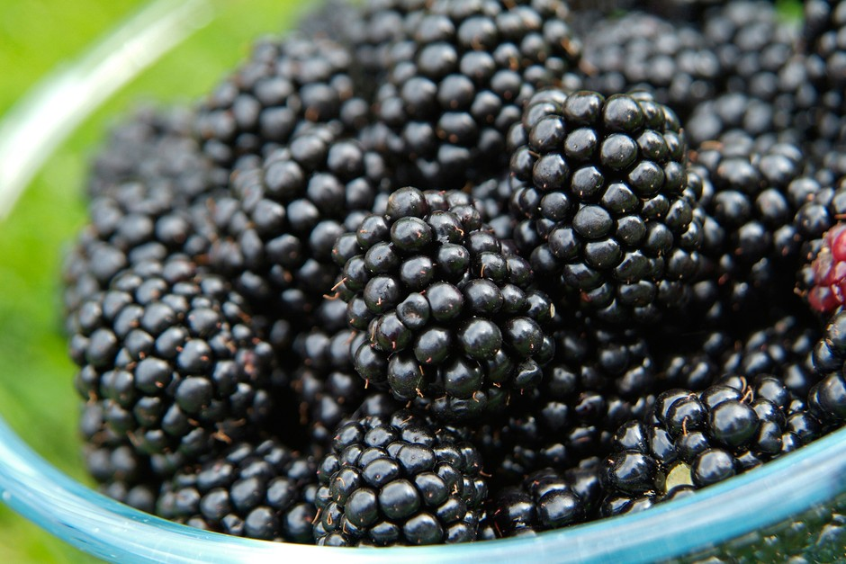
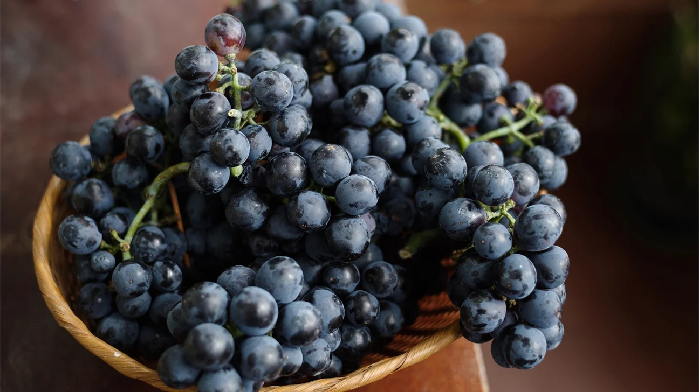
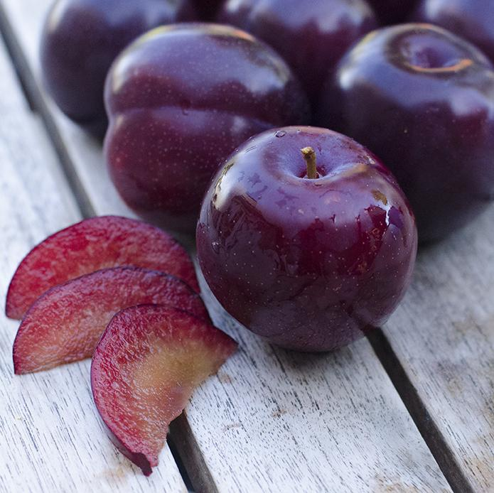

Blue and Purple Fruits

Blueberries: 3.5 stars
Taste: Blueberries have a delightful flavor that ranges from sweet to mildly tart, depending on their ripeness. When perfectly ripe, they are juicy and burst with sweetness. However, unripe blueberries can be a bit sour and lack that full flavor.
Structure: The structure of blueberries is small and round, with a smooth, deep blue skin that is both attractive and appetizing. They are easy to eat by the handful and make a convenient, mess-free snack. However, their size can be a disadvantage when they roll off the table or out of your hand.
Goes well with: Blueberries are incredibly versatile and can be used in a variety of dishes. They are excellent in baked goods like muffins, pancakes, and pies, where their sweetness intensifies. Blueberries are also great in smoothies, adding a natural sweetness and beautiful color. They pair well with yogurt, oatmeal, and cereals for a nutritious breakfast. Additionally, blueberries can be used in salads, particularly with greens and a tangy vinaigrette.
Blackberries: 5 stars
Taste: Blackberries have a rich, complex flavor that is both sweet and slightly tart, making them incredibly delicious. When perfectly ripe, they are juicy and full of depth, providing a burst of flavor with every bite. Their taste is robust and distinctive, setting them apart from other berries.
Structure: The structure of blackberries is unique, composed of numerous tiny drupelets that give them a slightly bumpy texture. Their deep, dark purple color is visually striking. Blackberries are generally larger than other berries and can be a bit messy to eat, especially if they are very ripe. However, their juicy, succulent nature more than makes up for any inconvenience.
Goes well with: Blackberries are wonderfully versatile. They shine in desserts such as pies, cobblers, and tarts, where their rich flavor can be highlighted. They are also fantastic in jams and preserves. Blackberries can be added to salads, pairing well with ingredients like goat cheese, nuts, and spinach. They are also great in smoothies and cocktails, adding a burst of flavor and a beautiful color.
Grapes: 5 stars
Taste: Grapes are wonderfully sweet and juicy, making them a delight to eat. They come in a variety of flavors, from the mildly sweet green grapes to the rich, sweet red and black varieties. Their crisp, refreshing taste is perfect for a quick, satisfying snack.
Structure: Grapes have a firm, smooth skin that encases their juicy flesh. They are small, easy to eat, and typically seedless, which adds to their convenience. The different colors – green, red, and black – are visually appealing and add variety to their presentation.
Goes well with: Grapes are extremely versatile. They are perfect for snacking on their own or adding to fruit salads. Grapes pair wonderfully with cheese, making them a staple on cheese boards. They can be frozen for a cool treat on hot days or used in desserts like tarts and sorbets. Grapes also complement savory dishes, such as chicken salad, where their sweetness provides a nice contrast.
Plums: 3 stars
Taste: Plums have a sweet and slightly tart flavor that can be quite refreshing. Their taste varies with ripeness, with perfectly ripe plums offering a juicy, succulent sweetness that is very satisfying. However, underripe plums can be quite tart and firm, which might not be as enjoyable.
Structure: Plums have a smooth, glossy skin that can range in color from deep purple to red to yellow. The flesh inside is juicy and tender, but there is a large pit in the center that needs to be removed. The skin can sometimes be a bit tart, which contrasts with the sweet flesh.
Goes well with: Plums are versatile and can be enjoyed in many ways. They are delicious eaten fresh or can be added to fruit salads for a sweet-tart flavor. Plums work well in desserts such as tarts, cakes, and compotes. They can also be used in savory dishes, like salads with feta cheese or roasted meats, where their sweetness complements other flavors. Plum preserves and jams are another great way to enjoy this fruit.